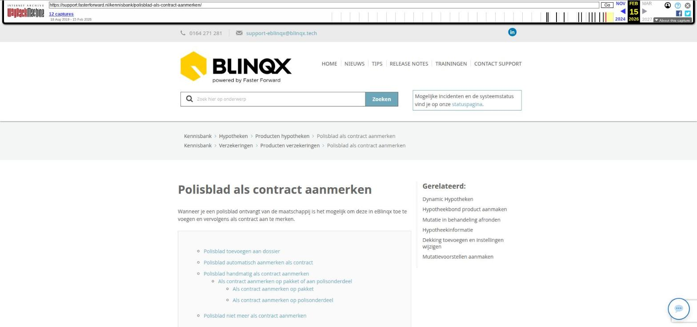

Polisblad als contract aanmerken

Tekstinhoud
Polisblad als contract aanmerken
Wanneer je een polisblad ontvangt van de maatschappij is het mogelijk om deze in eBlinqx toe te voegen en vervolgens als contract aan te merken.
Polisblad toevoegen aan dossier
Polisblad automatisch aanmerken als contract
Polisblad handmatig als contract aanmerken
Als contract aanmerken op pakket of aan polisonderdeel
Als contract aanmerken op pakket
Als contract aanmerken op polisonderdeel
Polisblad niet meer als contract aanmerken
Polisblad toevoegen aan dossier
Het polisblad dient eerst toegevoegd te zijn aan het dossier. Dit kan gebeuren via Aplaza of door deze handmatig toe te voegen. Klik hier indien je nog niet bekend bent met de manieren waarop documenten geüpload kunnen worden in eBlinqx.
Polisblad automatisch aanmerken als contract
Polisbladen kunnen via Aplaza binnenkomen. Het is mogelijk dat deze polisbladen automatisch als contract worden aangemerkt. Om automatisch als contract aangemerkt te worden moet de maatschappij het bericht als contract aanmerken door de juiste code hiervoor mee te sturen. Daarnaast moet bij het document in Beheer – Documenten – Soort documenten beheer 'Aanmerken als contract' aangevinkt staan. Om dit te controleren zoek je het document op in Soort documenten beheer en je klikt op het wijzigingsicoon.
Polisblad handmatig als contract aanmerken
Als contract aanmerken op pakket of aan polisonderdeel
Nadat het document handmatig toegevoegd is aan het dossier kan deze als contract aangemerkt worden. Er is een setting wat bepaald of je een document als contract aan kan merken op een polisonderdeel. Staat deze setting niet aan dan kan je het document alleen als contract aanmerken op het pakket.
Als contract aanmerken op pakket
Om het document als contract aan te merken ga je naar het tabblad Documenten. Klik achter het betreffende document op het pagina-icoon achter het document.
Let op! hiervoor dient het document gekoppeld te zijn aan het product.
Vervolgens kan je nu gemakkelijk vanuit het product het meest recente polisblad of contract raadplegen.
Ga hiervoor naar het product en klik hier op het pagina-icoon. Het document wordt gelijk in een preview getoond.
Als contract aanmerken op polisonderdeel
Als de setting aanstaat dan is het mogelijk om een document aan te merken als contract op een polisonderdeel. Hiervoor ga je naar het tabblad Documenten en klikt op het pagina-icoon achter het betreffende document. Let op: het document moet gekoppeld zijn aan het product.
Vervolgens kan je kiezen aan welk polisonderdeel je het document wilt koppelen. Het is ook mogelijk om het document aan het pakket te koppelen. Je merkt het contract aan door op de naam van het pakket of polisonderdeel te klikken.
Is het document gekoppeld aan een polisonderdeel dan is het pagina-icoon naast het polisonderdeel te vinden.
Staat bij jouw de setting om aan een polisonderdeel te kunnen koppelen niet aan en je wilt hiervan gebruik maken? Stuur dan een e-mail naar support-eblinqx@blinqx.tech.
Polisblad niet meer als contract aanmerken
Indien een document als contract is aangemerkt dan verandert het pagina-icoon naar een soort van grijs zonnetje. Door hierop te klikken wordt het document niet meer als contract aangemerkt.
Laatste update: 15 oktober 2025
Was deze informatie nuttig?
Ja Nee